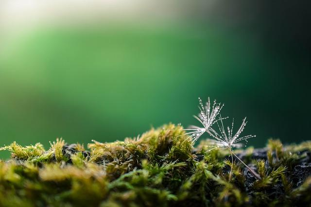
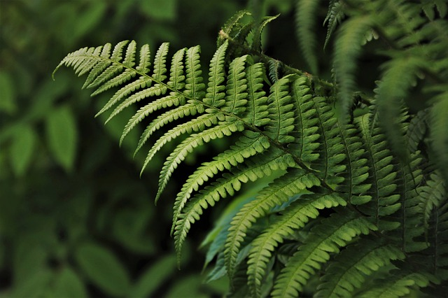
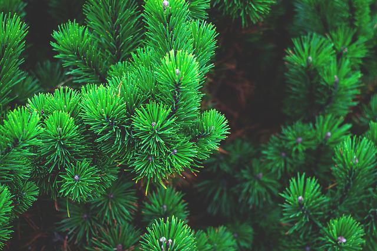

Plantae 植物界
Most of the kingdoms in the eukaryotes domain are what most people are familiar with. The current six kingdom under this domain are chromoalveolata, rhizaria, excavata, animalia, plantae, and fungi. You are probably not very familiar with the first three kingdom which represent some very important but small eukaryotic organisms. The last three should be familiar to you even by their name: animals, plants, and mushrooms (representative). In this section, I am going to comment on 4 main phyla under the kingdom of plantae and I will talk a little about their characteristics so you might be able to distinguish some in the future.
真核生物中的界大部分都是我们熟知的生物。目前这个领域下的六个王国是囊泡藻界, 有孔虫界, 古虫界, 动物界, 植物界和真菌界。 你可能对前三个王国不是很熟悉 它们代表了一些非常重要但规模较小的真核生物体。后三者你应该很熟悉，甚至从它们的名字就可以看出：动物。植物和蘑菇（代表）。 在本节中，我将对植物界下的4个主要门类进行评论。我将谈一谈它们的特点，这样你就可以在将来区分一些生活中的植物了。
Bryophytes 苔类植物门
When you think about mosses, you may connect them to small plants like grass. They are, however, quite different. Let's take a look at what make these small plants different from others.
当你想到苔藓时，你可能会把它们与草等小植物联系起来。然而它们是完全不同的。让我们来看看是什么使这些小植物与其他植物不同。
----They have structures similar to root hair called rhizoids but no root.
----它们有类似于根毛的结构，称为根状体，但没有根。
----Mosses have simple leaves and stems
----他们有着简单的枝叶系统
----They do not have vascular tissue
----他们没有维管组织（传导水分和养分的组织）
----They reproduce by producing spores in a capsule at end of their stalk
----它们通过在其茎部末端的囊中产生孢子来进行繁殖。
Filicinophytes 蕨类植物门
You still would not see any wood in this phylum of plants. But they have their special characteristics to differentiate from other plants.
在这一门类的植物中，你仍然不会看到任何木材。但它们有其特殊的特征，与其他植物不同。
----They have roots leaves and short non-woody stems.
----它们有根部，树叶以及非木质的茎秆。
----They have leaves curled up in bud and often divided into pairs of leaflets
----它们的叶子在芽中蜷缩起来，通常分为成对的小叶。
----They have vascular tissue
----他们有维管组织（传导水分和养分的组织）
----They reproduce by producing spores in sporangia usually on the underside of the leaves
----它们通过在孢子囊中产生孢子进行繁殖，通常在叶子的背面。
Coniferophytes 松柏门
Conifers are usually characterized by their special tree shape and leave shape. Let's see what else separate them from others.
针叶树通常以其特殊的树形和叶片形状为特征。让我们看看还有什么能将它们与其他植物区分开来。
----They have shrubs of trees with roots, leaves, and woody stems.
----它们有根、叶和木质茎。
----Their leaves often narrow with a thick waxy cuticle
----它们的叶子通常很窄，有一层厚厚的蜡质角质层
----They have vascular tissue
----他们有维管组织（传导水分和养分的组织）
----They reproduce by seeds which develop from ovules on the surface of the scales of female cones. Male cones produce pollen.
----它们通过种子繁殖，种子由雌性锥体鳞片表面的胚珠发育而成。雄性锥体产生花粉。
Angiospermophytes 被子植物门
The angiospermophytes phylum is one of the easiest to identify because it includes all flowing plants. Let's see some of its characteristics.
被子植物门是最容易识别的门类之一，因为它包括所有流动的植物。让我们看看它的一些特征。
----They are very variable, but usually have roots, leaves and stems.
----它们形态不一但是通常有根、叶和茎。
----Their stems of shrub and trees are woody.
----如果是树或者树丛他们会有木质的茎秆
----They have vascular tissue
----他们有维管组织（传导水分和养分的组织）
----They reproduce by seeds which develop from ovules inside ovaries in flower. Fruits develop from the ovaries to disperse the seeds.
----它们通过种子繁殖，种子由花中子房内的胚珠发育而成。果实从子房中发育出来，用来散播种子。